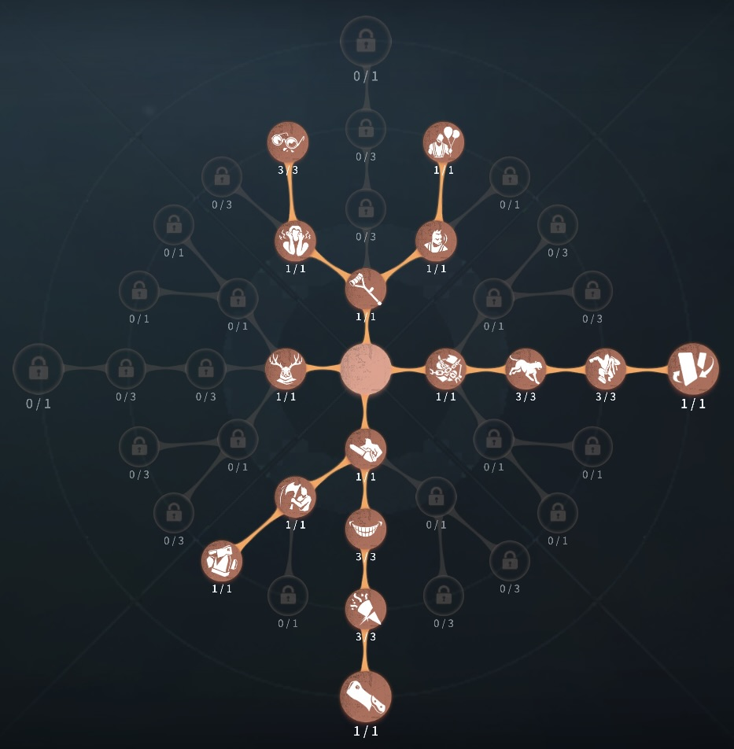
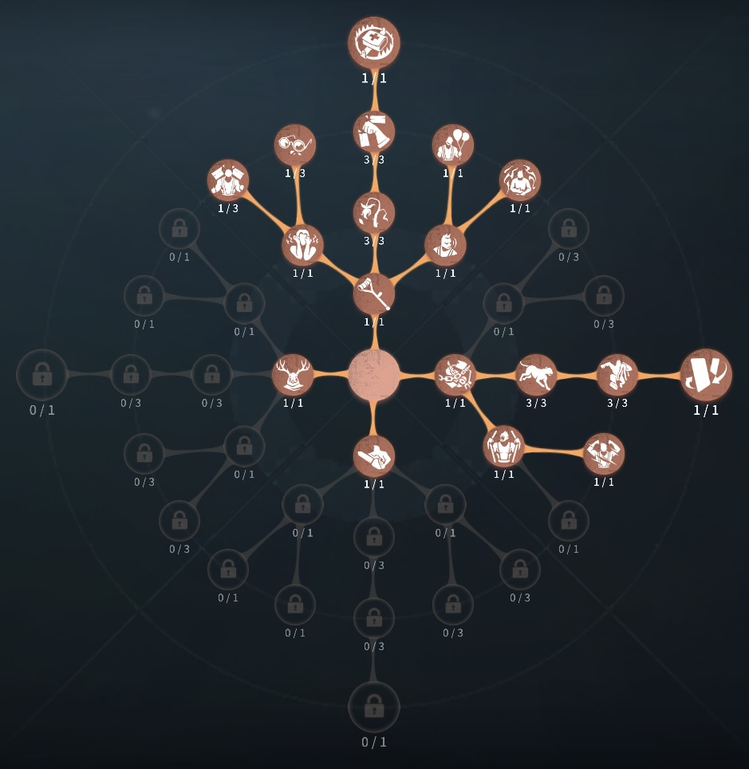

白黒無常の評価
サバイバーは操作ができない！？
外在特質とスキル
特質1:双魂
・ワープするたびに、白無常と黒無常を切り替える。特質2:謝必安(白無常)
・移動速度が速く、攻撃判定の範囲と持続時間が長いが、攻撃速度が遅く、板の破壊時間とスタン時間が長い。吸魂が使用できる特質3:范無咎(黒無常)
・攻撃速度が速く、板の破壊が早いが、攻撃判定の範囲と持続が短く、移動速度が遅い。揺魄を使用できる存在感0：諸行無常、無住涅槃
・諸行無常：スキルを長押しすることで一定の距離へとワープでき、ワープの後、双魂が発動する。ワープ後5秒間操作速度が25％上昇し、最初の通常攻撃の速度が速くなる。
・無住涅槃：
スキルを長押しすることで一定の距離へと鎮魂傘を設置する。鎮魂傘は設置されてから5秒間滞在し、その間周囲の範囲内のサバイバーを表示、同時に対象サバイバーの移動速度と板窓の操作速度を少し低下させ、操作速度を下げる。サバイバーは領域から離れても5秒間表示される。 鎮魂傘が設置されてる間、ワープするかしないかを選択できる。傘を設置している間は白黒無常の移動速度・窓乗り越え速度が上昇する。しかし、板破壊、通常攻撃ができない。
存在感1：吸魂揺魄、洗魂の鈴
・吸魂揺魄：白無常でのみ使用が可能。
5秒間移動速度が大幅に上昇する。スキル使用中付近3m以内のサバイバーを吸魂し、吸魂ゲージが貯まるとサバイバーは失魂状態となる。使用時間3.5秒を超えると途中で吸魂揺魄を終了させることができる。
失魂:
10秒間ほとんどの操作が行えなくなる。ハンターの幻覚が見えるようになる。
・洗魂の鈴（通称：黒ベル）：
黒無常の形態でのみ使用が可能
ハンターの向きにベルを鳴らし、前方のサバイバーを一定時間スタンさせる。また、スタン後サバイバーは調整判定を行うことになり、調整中は操作、アイテム、フラホを使用できない。調整に失敗すると60秒間心震状態となり、この状態で再度調整に失敗すると落魄状態となる。
落魄：
10秒間操作が反転する
存在感2：諸行無常強化
・ワープの時間が短縮され、ワープ後に一定範囲内のサバイバーに対して白無常は吸魂揺魄、黒無常は洗魂の鈴を発動させる。吸魂揺魄の場合命中すると即座に失魂状態にする。ハンターの立ち回り方
1. 初動の立ち回り
白黒無常は、白形態（謝必安）と黒形態（范無咎）を切り替えて戦うハンターです。それぞれの形態に得意な場面があるため、状況に応じて形態を使い分けることが勝利の鍵になります。
・索敵を優先:
試合開始直後は白形態で索敵。
白形態のワープを活かして、広範囲を素早く探索できる。
高台や障害物を超えられるため、暗号機を巡回しやすい。
サバイバーを見つけたら、状況に応じて黒形態に切り替え
チェイスを開始する場合 → 黒形態に変身
黒形態の通常攻撃は範囲が広く、当てやすい。
即座に攻撃できる状況なら白形態のまま攻撃もあり
2. 形態の使い分け
・白形態（謝必安）の特徴と使い方:
✅ 機動力が高い（ワープ移動が可能）
✅ 「吸魂」でサバイバーをスロウ状態にできる
白形態を活かす場面
索敵時や暗号機巡回時、強ポジへ素早く移動したい時、「吸魂」で相手の動きを鈍らせて有利に立ち回る
・黒形態（范無咎）の特徴と使い方
✅ 通常攻撃の範囲が広く、板・窓越しでも攻撃が当たりやすい
✅ 「黒ベル」でサバイバーの足止めができる
黒形態を活かす場面
チェイス時（通常攻撃が広範囲で当てやすい）
3. チェイス中の立ち回り
形態の変換を上手くこなすことで強い
・黒ベルを活用する:
黒ベルを当てて確実な一発を当てよう
・白吸魂を活用する:
追っているサバイバーがポジション変更する時や距離を取りに来たときなど、吸魂を使って接近し一発当てよう
・ワープで救助狩りを狙おう:
存在感2時、ワープ時に吸魂、黒ベルを範囲内に発動せさせるため、吊られているロケットチェアに置くことで、救助を阻止できる
4. 注意点
ワープ移動の精度を上げる →
白形態の移動能力を活かし、効率的に立ち回る。
攻撃範囲を理解する →
黒形態の攻撃は広範囲だが、慣れが必要。練習して当てやすくする。
おすすめの内在人格
裏向きカード型人格
この内在人格は、狂暴と生存者なしを最大化することでの椅子前、粘着の攻撃後の復帰を早くした人格

閉鎖空間裏向きカード型人格
この内在人格は、破壊欲や中毒症、怒り、飢餓を採用することで通電前に試合を終わらせる人格


みんなのコメント